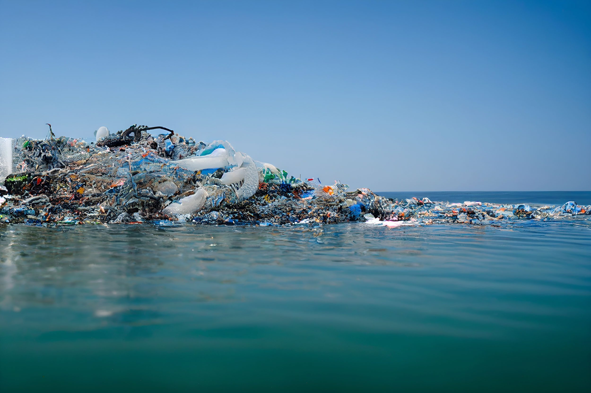

| |
FABBRICHE
CHE COSA SONO ?
Le fabbriche sono strutture industriali dedicate alla produzione di beni su larga scala. Questi beni possono essere di natura varia, inclusi prodotti manifatturati, macchinari, prodotti chimici, elettronica e altri articoli. Le fabbriche sono il cuore dell'industria manifatturiera, svolgendo un ruolo chiave nella trasformazione delle materie prime in prodotti finiti.
COME FUNZIONANO ?
Le fabbriche funzionano attraverso un processo organizzato di produzione che coinvolge diverse fasi. Ecco una panoramica generale di come solitamente funzionano le fabbriche:
Progettazione e Pianificazione: Il processo inizia con la progettazione del prodotto che si intende fabbricare. Vengono definite le specifiche del prodotto, la quantità da produrre e i materiali necessari. Si elabora quindi un piano di produzione.
Acquisto di Materie Prime: Le fabbriche acquistano le materie prime necessarie per la produzione. Questi materiali possono essere metalli, plastica, componenti elettronici, o qualsiasi altra cosa necessaria per la realizzazione del prodotto.
Reception e Stoccaggio delle Materie Prime: Le materie prime vengono ricevute e immagazzinate in magazzini appositi. È importante gestire efficacemente l'inventario per evitare interruzioni della produzione.
Produzione e Assemblaggio: Le fasi di produzione coinvolgono l'elaborazione delle materie prime attraverso diverse operazioni. Queste possono includere lavorazioni meccaniche, assemblaggio di componenti, lavorazioni chimiche o altri processi specifici del settore.
Controllo di Qualità: Durante e dopo il processo di produzione, vengono eseguiti controlli di qualità per assicurare che il prodotto soddisfi gli standard prestabiliti. Ciò può coinvolgere test fisici, test di laboratorio o ispezioni visive.
Imballaggio: I prodotti finiti vengono imballati in modo sicuro e conforme alle normative. L'imballaggio può anche includere etichettatura e istruzioni per l'uso.
Magazzinaggio dei Prodotti Finiti: I prodotti finiti vengono immagazzinati in magazzini in attesa della distribuzione. La logistica è fondamentale per garantire una distribuzione efficiente.
Distribuzione e Spedizione: I prodotti finiti vengono distribuiti ai clienti attraverso reti di distribuzione. Questo può coinvolgere la spedizione a magazzini di dettaglianti o direttamente ai consumatori.
Manutenzione e Ottimizzazione: Le fabbriche richiedono manutenzione regolare delle attrezzature e ottimizzazione dei processi per garantire efficienza ed efficacia nel lungo termine.
Ogni fabbrica può variare nel dettaglio del processo in base al tipo di produzione e al settore, ma il flusso generale comprende queste fasi principali. Automazione, tecnologie avanzate e pratiche di gestione sono spesso implementate per migliorare l'efficienza e la qualità dei prodotti.
ESEMPI NELLA STORIA:
Ecco alcuni esempi storici di fabbriche che hanno avuto un impatto significativo nella storia industriale:
Cotton Mill di Arkwright (1780): La fabbrica di filatura del cotone di Richard Arkwright a Cromford, in Inghilterra, è spesso considerata uno dei primi esempi di fabbrica moderna. Arkwright ha introdotto innovazioni come il telaio idraulico e ha organizzato la produzione in modo sistematico.
Manifattura di Lowell (1820):Le manifatture tessili di Lowell, situate a Lowell, Massachusetts, negli Stati Uniti, furono un esempio di fabbrica tessile in cui le donne venivano impiegate in grandi numeri. Il sistema prevedeva la produzione di tessuti dall'inizio alla fine all'interno della stessa struttura.
Ford River Rouge Complex (1928):Questa enorme fabbrica automobilistica a Dearborn, Michigan, fu fondata da Henry Ford. È stata una delle prime fabbriche a implementare l'assemblaggio in linea su vasta scala, rivoluzionando la produzione di automobili.
Waltham-Lowell System (1830-1850): Questo sistema negli Stati Uniti coinvolgeva la produzione tessile in fabbriche situate in città come Waltham e Lowell. Ha introdotto il concetto di fabbrica a "città modello" con alloggi per i lavoratori e il coinvolgimento di donne e ragazze nel processo di produzione.
SUDDIVISIONE DEL LAVORO
CHE COS'E ?
La suddivisione del lavoro è un principio organizzativo che consiste nella ripartizione di un compito o di un processo produttivo in diverse fasi o mansioni separate, assegnate a diverse persone o gruppi specializzati. Questa pratica mira a migliorare l'efficienza e la produttività attraverso la specializzazione delle competenze e la concentrazione su compiti specifici.
Adam Smith, un economista del XVIII secolo, ha discusso ampiamente della suddivisione del lavoro nel suo libro "La ricchezza delle nazioni". Un esempio classico di suddivisione del lavoro è l'approccio dell'assemblaggio in linea utilizzato nelle fabbriche, dove ciascun lavoratore è responsabile di un compito specifico nel processo produttivo.
COME FUNZIONA
La suddivisione del lavoro funziona attraverso la frammentazione di un compito complesso in compiti più piccoli e specifici, assegnati a individui o gruppi specializzati. Questa pratica organizzativa è stata ampiamente implementata in diversi settori per migliorare l'efficienza e la produttività. Ecco come solitamente funziona:
Analisi del Lavoro: Inizialmente, si esegue un'analisi approfondita del lavoro per identificare le diverse attività coinvolte in un processo. Questa analisi determina quali compiti possono essere suddivisi in maniera efficiente.
Specializzazione delle Mansioni: Una volta identificati i compiti specifici, vengono assegnati a lavoratori o gruppi con competenze specializzate. Ad esempio, in una catena di montaggio, ogni lavoratore può essere responsabile di un passo specifico nella produzione.
Assemblaggio o Coordinamento: Le diverse fasi o compiti vengono successivamente assemblati o coordinati per completare il processo. Ogni lavoratore contribuisce alla parte assegnatagli, e il prodotto finale emerge dalla somma delle loro contribuzioni.
Ripetizione del Processo: La suddivisione del lavoro spesso comporta la ripetizione di specifici compiti, consentendo ai lavoratori di affinare le loro competenze e migliorare l'efficienza complessiva.
Utilizzo di Tecnologie e Attrezzature: La suddivisione del lavoro può essere supportata da tecnologie e attrezzature specializzate. Ad esempio, nelle fabbriche moderne, i robot possono svolgere compiti specifici in modo efficiente.
Controllo di Qualità Durante e alla fine del processo, vengono spesso implementati controlli di qualità per garantire che ogni fase contribuisca a un prodotto o servizio finale di alta qualità.
ESEMPI NELLA STORIA:
Ecco alcuni esempi storici significativi della suddivisione del lavoro:
Manifattura Tessile a Cromford (fine del XVIII secolo): La fabbrica di filatura del cotone di Richard Arkwright a Cromford, Inghilterra, è considerata uno dei primi esempi di suddivisione del lavoro. Arkwright ha introdotto macchinari per la filatura del cotone e ha organizzato il processo produttivo in maniera sistematica.
Sistema di Produzione di Armamenti di Springfield (inizio del XIX secolo): Durante la guerra del 1812 negli Stati Uniti, la fabbrica di Springfield implementò un sistema di produzione in cui ogni lavoratore era specializzato in una parte specifica dell'assemblaggio delle armi da fuoco.
Fordismo e la Catena di Montaggio (inizio del XX secolo): Henry Ford rivoluzionò la produzione automobilistica introducendo la catena di montaggio per la produzione del Modello T. Ogni lavoratore svolgeva un compito specifico, migliorando l'efficienza e riducendo i costi di produzione.
SALARI
CHE COSA SONO ?
I salari sono pagamenti regolari e periodici che un datore di lavoro eroga a un dipendente in cambio del lavoro svolto. Questa forma di compensazione rappresenta la componente principale del reddito di molti lavoratori. I salari possono essere stabiliti su base oraria, mensile o annuale, a seconda delle modalità di contratto lavorativo.
ESEMPI NELLA STORIA:
Ecco alcuni esempi storici significativi relativi ai salari e alla storia del lavoro:
Sciopero delle Magliere a Lowell (Massachusetts, 1834): Le giovani donne che lavoravano nelle manifatture tessili di Lowell chiedevano migliori condizioni di lavoro, salari più alti e riduzione dell'orario di lavoro. Lo sciopero del 1834 è uno dei primi esempi di mobilitazione delle lavoratrici per miglioramenti nelle condizioni lavorative e salariali.
Sciopero Ferroviario del 1877 (Stati Uniti): Diversi dipendenti delle ferrovie negli Stati Uniti andarono in sciopero chiedendo aumenti salariali in risposta a tagli ai loro stipendi. L'evento si diffuse a livello nazionale coinvolgendo migliaia di lavoratori.
Lotta per l'Orario Lavorativo di 8 Ore (Fine del XIX secolo): Movimenti sindacali e lavoratori in diversi paesi hanno lottato per ridurre la durata dell'orario di lavoro da 10-12 ore a giornata a 8 ore. Questi sforzi hanno portato a miglioramenti nelle condizioni lavorative e a salari più equi.
Rivolte dei Lavoratori Automobilistici di Flint (Michigan, 1936-1937): Gli operai delle linee di montaggio automobilistiche della General Motors hanno scioperato per ottenere riconoscimento sindacale, migliori salari e condizioni lavorative più sicure. Questo evento è stato fondamentale per lo sviluppo del sindacalismo negli Stati Uniti.
Progetto Great Migration (Stati Uniti, 1916-1970): Molti afroamericani del sud si sono trasferiti nelle città industriali del nord in cerca di opportunità di lavoro e salari migliori durante il periodo della Grande Migrazione.
Movimento per il Salario Minimo (Stati Uniti, XX secolo):Il movimento per il salario minimo ha portato a diverse leggi che stabiliscono un salario minimo orario per garantire un livello di compensazione equo per i lavoratori.
Questi esempi riflettono momenti chiave nella storia in cui i lavoratori hanno cercato di migliorare le proprie condizioni di lavoro e ottenere salari più giusti attraverso scioperi, movimenti sindacali e riforme legislative.
INQUINAMENTO
CHE COS'E ?
L'inquinamento si riferisce alla presenza o all'introduzione di sostanze dannose o indesiderate nell'ambiente, che possono causare impatti negativi sulla salute umana, sulla fauna, sulla flora o sui sistemi ecologici in generale. Queste sostanze inquinanti, chiamate anche inquinanti, possono essere di varie origini, inclusi agenti inquinanti atmosferici, idrici, del suolo e acustici.
COME FUNZIONA ?
L'inquinamento è il risultato dell'introduzione di sostanze nocive nell'ambiente. Il suo funzionamento coinvolge diverse fasi, a seconda del tipo di inquinante e delle sue fonti. Ecco una visione generale del funzionamento dell'inquinamento:
Emissione di Inquinanti: L'inquinamento inizia con l'emissione di sostanze nocive da fonti antropiche o naturali. Le fonti antropiche includono attività industriali, veicoli, agricoltura intensiva, discariche di rifiuti e processi di combustione.
Trasporto nell'Ambiente: Una volta emessi, gli inquinanti possono essere trasportati attraverso l'aria, l'acqua o il suolo, a seconda della natura dell'inquinante. Ad esempio, i gas possono essere dispersi nell'aria, mentre sostanze chimiche possono essere trasportate dall'acqua o assorbite dal suolo.
Distribuzione e Diffusione: Gli inquinanti si distribuiscono nell'ambiente, diffondendosi attraverso le correnti atmosferiche, fluviali o i processi geologici. Questa diffusione può portare gli inquinanti a raggiungere regioni distanti dalle fonti di emissione iniziali.
Accumulo e Persistenza: Gli inquinanti possono accumularsi negli ecosistemi, nei corpi idrici o nel suolo, a seconda delle loro caratteristiche chimiche e fisiche. Alcuni inquinanti possono persistere per lunghi periodi, causando impatti a lungo termine.
Impatti sulla Salute Umana e Ambientale: Gli inquinanti possono avere effetti negativi sulla salute umana e sull'ambiente. Possono causare malattie respiratorie, problemi dermatologici, contaminare risorse idriche, danneggiare la biodiversità e influenzare i cicli biogeochimici.
Retroazione del Ciclo: In alcuni casi, l'inquinamento può contribuire a un ciclo di inquinamento continuo. Ad esempio, l'inquinamento atmosferico può causare piogge acide, che a loro volta influenzano la qualità del suolo e delle acque.
Misurazione e Monitoraggio: Per comprendere l'entità dell'inquinamento e adottare misure correttive, è necessario un costante monitoraggio delle concentrazioni di inquinanti in aria, acqua e suolo.
ESEMPI NELLA STORIA:
Ecco alcuni esempi storici e contemporanei di episodi significativi di inquinamento:
London Smog (1952): Un episodio di smog a Londra nel 1952, causato principalmente dalle emissioni industriali e dal riscaldamento domestico a carbone, ha portato a un elevato tasso di inquinamento atmosferico. Questo evento è associato a migliaia di morti premature e ha contribuito a stimolare l'attenzione sul controllo dell'inquinamento dell'aria.
Disastro del Cianuro di Baia Mare (2000): Una diga contenente scorie minerarie a Baia Mare, in Romania, cedette, rilasciando enormi quantità di cianuro nei fiumi. Questo ha causato uno dei peggiori disastri ambientali in Europa, con gravi impatti sulla fauna ittica e sull'approvvigionamento idrico.
Inquinamento delle Acque del Fiume Citarum (Indonesia): Il fiume Citarum, situato sull'isola di Giava, è diventato uno dei fiumi più inquinati al mondo a causa delle discariche industriali non regolamentate. Questo inquinamento ha gravi effetti sulla salute umana e sull'ambiente circostante.
Incidente di Chernobyl (1986): L'esplosione del reattore nucleare di Chernobyl in Ucraina ha rilasciato una grande quantità di radiazioni nell'ambiente, causando gravi impatti sulla salute umana e sull'ecosistema circostante. È considerato uno degli incidenti nucleari più gravi nella storia.
Disastro dell'Exxon Valdez (1989): La fuoriuscita di petrolio dalla petroliera Exxon Valdez al largo delle coste dell'Alaska ha causato uno degli incidenti petroliferi più grandi e dannosi della storia. L'inquinamento ha avuto effetti devastanti sulla fauna selvatica e sulla pesca locale.
Inquinamento dell'Aria a Pechino (Recente): Pechino, Cina, ha affrontato problemi gravi di inquinamento atmosferico a causa delle emissioni industriali e dell'aumento dei veicoli a motore. Livelli pericolosamente alti di particolato atmosferico hanno generato preoccupazioni per la salute pubblica.
Rifiuti Plastici nell'Oceano (Contemporaneo): L'accumulo di rifiuti plastici negli oceani è diventato un problema ambientale globale. Grandi quantità di plastica danneggiano la vita marina e minacciano gli ecosistemi marini.
Questi esempi evidenziano come l'inquinamento abbia avuto impatti significativi sulla salute umana e sull'ambiente in varie parti del mondo, spingendo a una maggiore consapevolezza e ad azioni per mitigare gli effetti negativi.
Foto di una fabbrica contemporanea. Immagine dello Sciopero Ferroviario del 1877 (Stati Uniti).  Foto di un oceano inquinato con plastica |
 |